Kamifurano
Kamifurano · Hokkaido
Kamifurano
Highlighted on the Hokkaido map.
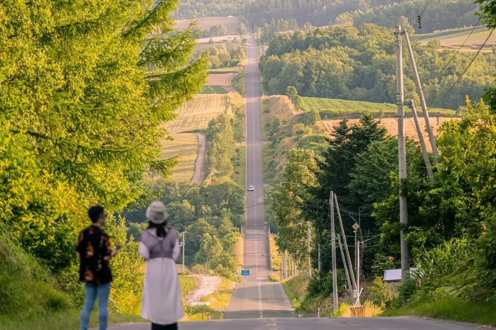
Stay
フロンティア フラヌイ温泉
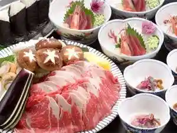
Furonteia Furanui Onsen
富良野ホップスホテル
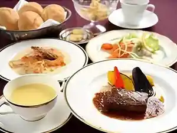
Furano Hoppusuhoteru
旅の宿 ステラ
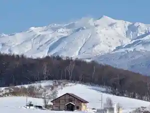
Tabi No Yado Sutera
ペンション ランドスケープふらの
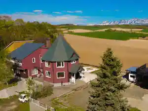
Penshon Randosukeepu Furano
Villa kami-furano
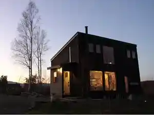
Villa Kami-Furano
Rising Sun Furano
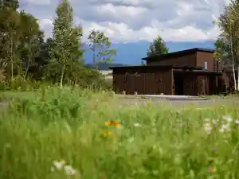
Rising Sun Furano
大地の宿 じょう舎
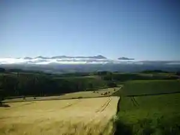
Daichi No Yado Jou Sha
プチペンション田舎倶楽部
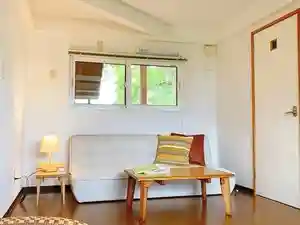
Puchipenshon Inaka Kurabu
ＮＯＲＴＨ ＧＬＡＭＰＥＲ 富良野
N O R T H G L A M P E R Furano
かみふらの道楽館
Kamifurano Douraku Kan
ふらのキャラバンハウス ちにた
Furano Kyarabanhausu Chinita
小さな宿 旅の途中
Chiisa Na Yado Tabi No Tochuu
Dining
鈴喜福太郎
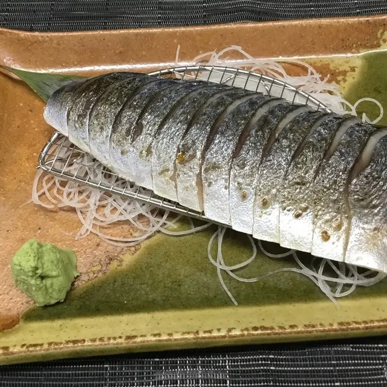
Suzu Yoshitomi Tarou
ゐーまーる
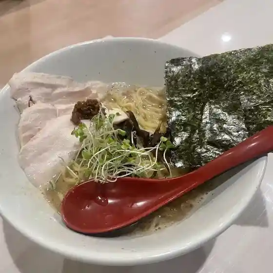
Iimaaru
ペンション 風の道
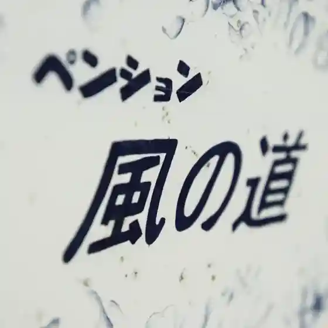
Penshon Kaze No Michi
味のはげ亭
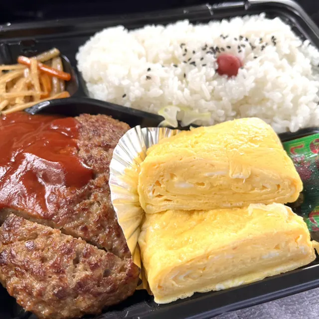
Aji Nohage Tei
松月
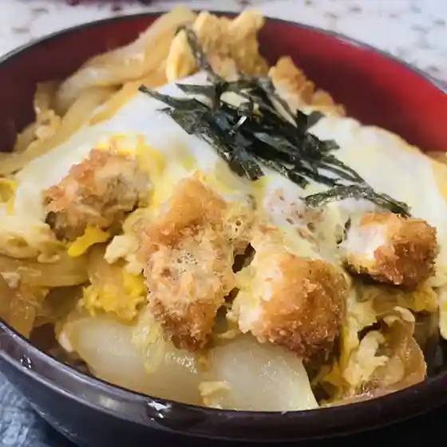
Matsuzuki
焼きにく屋うの
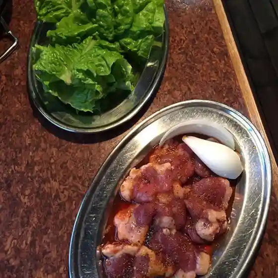
Yaki Niku Ya Uno
食事処こば

Shokuji Tokoro Koba
みどり寿し
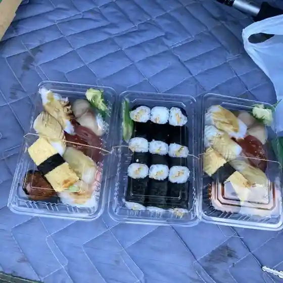
Midori Hisashi Shi
有本豆腐店
Arimoto Toufu Mise
ふらのガーデンカフェ
Furano Gaadenkafe
五十番食堂
Gojuu Ban Shokudou
ファーム富田 ラベンダーイースト
Faamu Tomita Rabendaaiisuto
レストハウス 想い出のふらの
Resutohausu Omoide Nofurano
ハーブガーデン富良野
Haabugaaden Furano
モンマルシェ
Monmarushie
香りの舎
Kaori No Sha
にく○
Niku ○
宿泊宝龍
Shukuhaku Houryuu
テーブルトップ
Teeburutoppu
江花珈琲焙煎所
Ebana Koohii Baisen Tokoro
竹寿司
Take Sushi
けむり屋
Kemuri Ya
お料理 ほり田
O Ryouri Hori Ta
白銀荘
Hakugin Sou
Sights
Jiettokosuta no Michi
Jiettokosuta no Michi
Nichi no Shutsuko Garden Lavender Garden
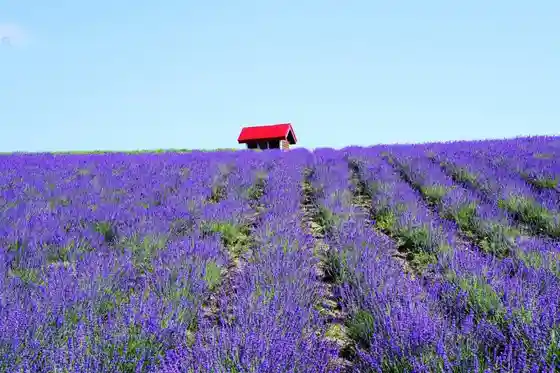
Nichi no Shutsuko Sono Rabenda Sono
Furawa Land Kamifura no
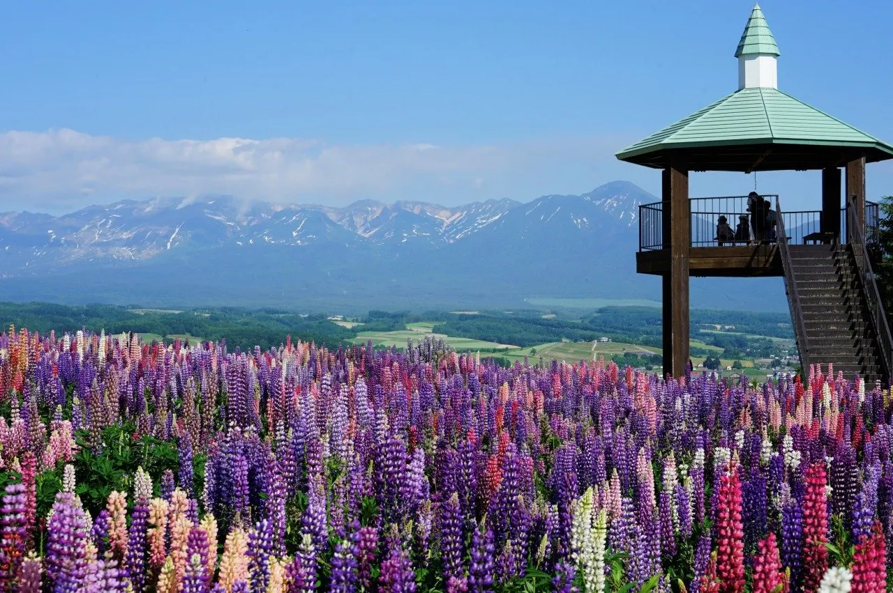
Furawa Land Kamifura no
Miyama Pass Tembo Terasu
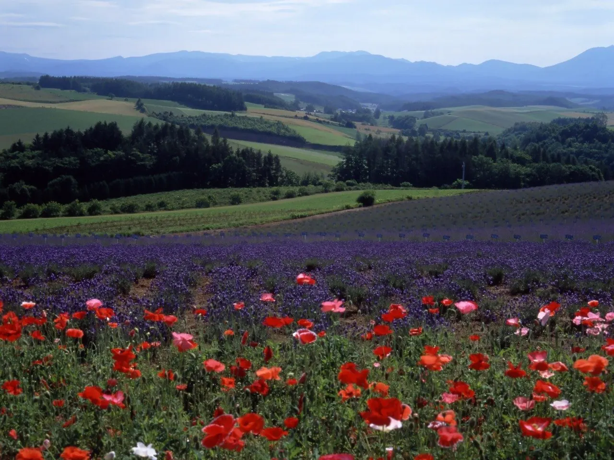
Miyama Toge Tembo Terasu
Goto Sumio Art Museum
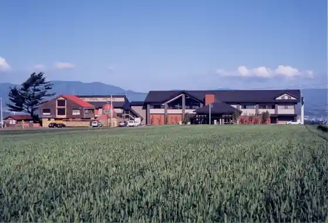
Goto Sumio Art Museum
Hall no Farm
Hall no Farm
Tsuchi no Hall
Tsuchi no Hall
Tada Wainarii
Tada Wainarii